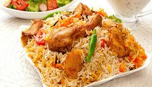
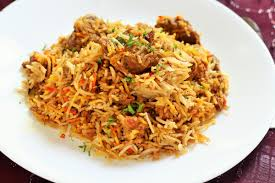

Comfort Foods for Cold Nights, Broken Hearts, and everyDay
>Biryani with desi TARKA
By SHEIKH SAMI AHMED
MARCH 25, 2020


RECIPE 1
Content:
Ingredient
Directions
Ingredient
Chicken 12 pieces 1 kg
Basmati Rice 1 kg
Onion Golden Brown 2 large size
National Ginger Garlic Paste 2 tbsp
Yogurt 2 cups
National Sindhi Biryani Mix (ensure plums are separated) ½ packet
White Cumin 1 tsp
Bay Leaf 1 or 2
Whole Black Pepper 7-8
Fresh Lemon 3-4
Mint Leaves 1 bunch
Crushed Cardamom 4-6
Warm Milk 1 cup
Saffron Color ¼ tsp
Saffron (optional) 1 tsp
Salt to taste
Cooking Oil As per requirement
Directions
Marinate 1 kg Chicken with 2 tbsp brown onion, 1 tbsp National Ginger Garlic Paste, ½ tsp grated papaya, ½ pack National Sindhi Biryani Masala, 1 tbsp National Red Chili powder, mint leaves, 2 tbsp of lemon juice, salt, let it rest in the refrigerator for at least 1-2 hours.
Soak rice well for at least 1 hour. Wash rice well and boil rice with black cumin, 2-3 cloves, 3-4 cardamom, 2-3 cinnamon sticks, 4-6 black pepper cloves, 3-4 bay leaf and mint leaves. Once done, half drain them in colander and keep them aside.
Cook marinated chicken on low flame with 1 cup of cooking oil till chicken pieces are tender and chicken is done. Once cooked set it aside. Generally, it takes around 8-10 minutes for chicken to become tender and cooked.
Now take a deep pan, grease it with cooking oil and add half serving of steamed rice, top it up with cooked chicken, top chicken with mint leaves, brown onion and lemon juice and then layer it with other half of the rice on top. Garnish again with mint leaves, brown onion.
Mix warm milk with saffron color and pour over the flavorful garnished rice and squeeze lemon juice on top and cover it with lid and let it simmer on low flame for 10 minutes at least.
Once done mix it with quarter plate from all four sides and serve delicious Hyderabadi Biryani in a nice rice plate topped with some crisp brown onion and fresh mint leaves along with Yogurt raita and some National mixed pickles and salad.
I MADE IT